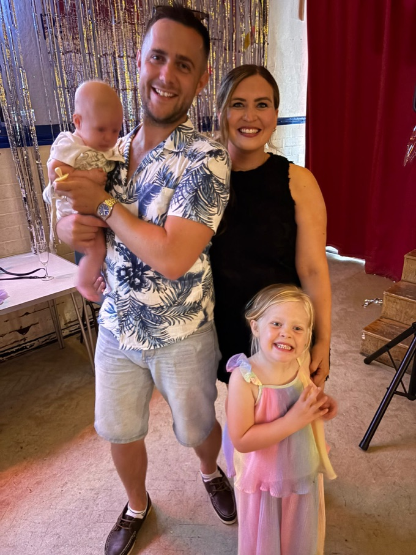

01 · Biography
Trent Peek

I’ve been ambitious for as long as I can remember, and for a while I wasn’t sure where to point it. I started small: a Business Studies degree at Sheffield Hallam, a year at a youth charity working with young autistic adults, then sales floors and regional branches. I did well at all of it, and what surprised me was how much I liked building and leading a team, more than the selling itself.
The selling started for real at Edmundson Electrical in 2014, in a business development role. Within a few months I’d opened more new accounts than anyone across their four-hundred-plus branches and won the national competition for it. I like people, and I like being in the room when someone decides to back you. Most of what I know about that I picked up on those floors — I didn’t arrive with it.
At CCM Group I got to do it at a larger scale for the first time. I joined in business development and worked up through Sales & Marketing Director in 2018 and Managing Director in 2019 to Group Director in 2020. Over that time we grew turnover to a projected £12m, up 401% on 2017, and tripled the headcount. We pivoted the whole operation through the pandemic to supply PPE to councils and the NHS. The figure mattered to me less than the people who kept turning up through the hard weeks, still believing in where we were headed.
Late in 2021 I co-founded We Are Fulfilment with Richard Ardis, a VC-backed e-commerce 3PL. We built it from a standing start to £4.8m in revenue over three years — fifty people across two Nottingham fulfilment centres, five funding rounds, a place on the FEBE Growth 100. It’s the work I’ve been most caught up in: a building full of people who’d chosen to be there.
In March 2026 it ended. My relationship with the lead investor broke down over control and direction, and the company went into administration. It’s the hardest thing I’ve been through, and I won’t dress it up — losing something you built, and the team you built it with, is a particular kind of difficult. What I took from it is blunt and useful: govern the work properly, and trust the numbers you can measure over the ones you want to believe.
That lesson shapes what I do now. Gardn Labs is a consumer app I designed and shipped on my own, AI-orchestrated under rules and guardrails I wrote myself — live on the App Store and Google Play in 20 markets and 13 languages, its day-to-day operations run by more than thirty governed AI agents. I first opened a coding tool on 16 April 2026, and everything since is counted, not projected. My second child arrived the same year, so it’s been a full house in every sense.
Away from all of it, the garden is where I switch off. I like that it can’t be rushed and the reward comes slowly; a hard sudoku does a similar job. I’ve followed Newcastle United for years and get to a few games a season. And my wife and our two children matter more to me than any of the rest of it, by a distance.
Most of what I’ve done comes down to the same thing: take a team and a business, and get more out of both than anyone expected. I did it on the sales floor at Edmundson, running CCM up to Group Director, and building We Are Fulfilment from nothing with Richard. Woodlark, the consultancy I run with Richard now, puts the same instincts to work — but a client at a time. What I want next is to do that at a scale that reaches hundreds of thousands of people and companies rather than one after another, on a team where marginal gains, continual improvement and genuinely big thinking are the standard, not the exception.
02 · The record
2014 – 15
Edmundson Electrical — BDM. Topped a nationwide new-business competition across 400+ branches: most new accounts opened over the three-month period.
2015 – 2022
CCM Group — BDM (2015), Sales & Marketing Director (2018), Managing Director (2019), Group Director (2020). Projected £12m turnover, 401% growth on 2017, the Trusted PPE consumer brand.
2021 – 26
Co-founded We Are Fulfilment, a VC-backed e-commerce 3PL. £4.8m revenue, 50+ team, five institutional rounds.
2026 —
Founder, Gardn Labs — a 20-market consumer AI app, operated by a governed agent workforce.
Awards
FEBE Growth 100 2024 · Young Leader, East Midlands Leadership Awards 2021 · Entrepreneur of the Year · Barclays business accelerator 2023.
Education
BA (Hons) Business Studies, Sheffield Hallam University · co-host, “Business, Interrupted” podcast.
I’ve founded, grown and fought for businesses at SME scale, and I know what actually moves the numbers. I want to do that now at a size where marginal gains and big thinking aren’t a bonus — they’re the baseline.